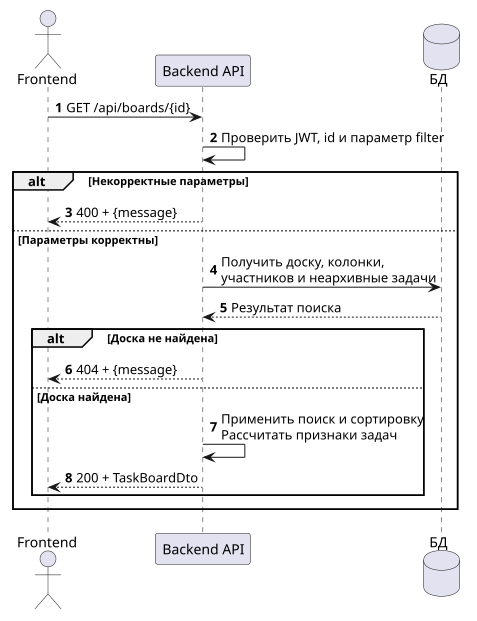

Возвращает доску с колонками и неархивными задачами.
Доступ: JWT. Дополнительные разрешения и членство в доске не проверяются.
Используется в UC-1. Выбор доски и поиск задач.
Схема работы


@startuml
autonumber
actor "Frontend" as FE
participant "Backend API" as API
database "БД" as DB
FE -> API : GET /api/boards/{id}
API -> API : Проверить JWT, id и параметр filter
alt Некорректные параметры
API --> FE : 400 + {message}
else Параметры корректны
API -> DB : Получить доску, колонки,\nучастников и неархивные задачи
DB --> API : Результат поиска
alt Доска не найдена
API --> FE : 404 + {message}
else Доска найдена
API -> API : Применить поиск и сортировку\nРассчитать признаки задач
API --> FE : 200 + TaskBoardDto
end
end
@endumlАлгоритм
Проверить JWT и условие
id > 0. Прочитать параметрfilterкак JSON-объект. Если параметры некорректны, вернуть400.Найти доску и загрузить сведения о владельце, участниках, колонках и неархивных задачах. Если доска не найдена, вернуть
404.Если указано поле
search, выполнить поиск подстроки в названии и описании задач послеTrimи приведения к нижнему регистру.Отсортировать колонки по
order. Внутри каждой колонки сначала разместить задачи, где текущий пользователь назначен исполнителем.Добавить настройки полей карточек, признаки назначения пользователя и приближения срока выполнения. Вернуть
TaskBoardDto.
Входные параметры
Где | Поле | Тип | Обязательно | Описание и ограничения |
|---|---|---|---|---|
PATH |
| integer | Да | Идентификатор доски, |
QUERY |
| string | Нет | JSON-строка с полем |
Пример значения filter:
{
"search": "Испытания"
}
Ответ
200 OK: возвращает объект TaskBoardDto со сведениями о доске, колонках и задачах.
Поле | Тип | Описание |
|---|---|---|
| integer | Идентификатор доски |
| integer | Идентификатор владельца |
| integer, nullable | Идентификатор проекта |
| string | Название доски |
| string | Логин владельца |
| string[] | Логины участников доски |
| object | Настройки отображения полей карточек |
| array | Колонки доски |
Элементы массива columns:
Поле | Тип | Описание |
|---|---|---|
| integer | Идентификатор колонки |
| string | Название колонки |
| integer | Порядковый номер колонки |
| boolean | Признак запрета создания задач |
| boolean | Признак возможности завершения задачи |
| boolean | Признак завершающей колонки |
| TaskCardDto[] | Неархивные задачи колонки |
Структура TaskCardDto описана в методе GET /api/tasks/{id}.
Особенности данных задачи
Поле | Описание |
|---|---|
|
|
| Признак приближения срока выполнения незакрытой задачи |
| Пустой массив |
Значение deadlineType определяется по оставшемуся времени до срока выполнения:
Значение | Условие |
|---|---|
| До срока осталось не более 7 дней |
| До срока осталось не более 14 дней |
Отсутствует | До срока осталось более 14 дней или задача закрыта |
Ошибки
Код | Причина | Ответ |
|---|---|---|
400 | Идентификатор доски |
|
400 | Параметр |
|
404 | Доска не найдена |
|
Пример запроса
GET /api/boards/101?filter=%7B%22search%22%3A%22test%22%7D